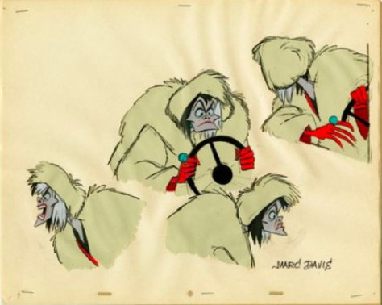

Design Hero - Marc Davis

One of the people who I consider to be an inspirational design hero is Marc Davis, a legendary traditionally animator at Walt Disney Studios. Growing up, I have always been drawn towards classic animation, and more specifically Disney animation. In my free time, I enjoy researching and viewing original concept art and behind-the-scenes sketches from Disney films. It is difficult to choose just one Disney animator to write about, but Marc Davis’ art is very remarkable. Marc Davis, now since passed, animated characters for Disney films, such as Cinderella, Alice in Wonderland, Bambi, Sleeping Beauty, and Peter Pan. He, being one of the nine original artists on Walt Disney’s team, was the prominent illustrator for characters including Maleficent, Thumper, Tinkerbell, and Cruella De Vil.

The reason why Marc Davis inspires me is his talented and flowing abilities with illustration. I cannot imagine the difficulty and excitement it would have been to work on these original Disney animated ‘renaissance’ movies. I specifically enjoy his concept art in Sleeping Beauty. He created possibly one of the most iconic villains, Maleficent, of all time. He also created another iconic villain, Cruella De Vil in 101 Dalmations.

The characters that he helped designed are so loose with expressive poses. Each animation that he drew was so precise and each movement had a purpose in the characters. During my free time I love looking at animation cels and concept art, as shown on the right and left, and drawing the characters he created. Again, the character design, line work, colors, and overall craft of this artist makes him a legendary Disney animator and one of my design heroes.